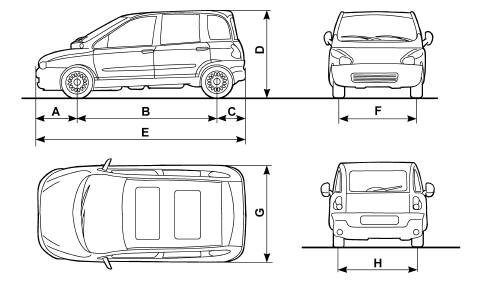
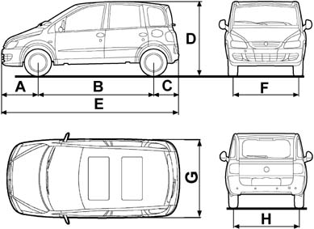

VEHICLE DIMENSIONS
- Path
- Technical Data > PROJECT DESCRIPTION AND SPECIFICATIONS > VEHICLE DIMENSIONS
- Kind
- technical data / specifications
- Applies to
- all engines; all production periods
- Interactive page
- https://sloeber94.github.io/elrnDB-fMltpl/en/#/2888517
Applies to: all engines; all production periods
1581 16v | BIPOWER | BLUPOWER | LPG | 1910 JTD | |
|---|---|---|---|---|---|
A (mm) | 760 837 (***) | 760 837 (***) | 760 837 (***) | 760 837 (***) | 760 837 (***) |
B (mm) | 2666 | 2666 | 2666 | 2666 | 2666 |
C (mm) | 568 586 (***) | 568 586 (***) | 568 586 (***) | 568 586 (***) | 568 586 (***) |
D (mm) | 1695 | 1700 (1721) (**) | 1700 | 1721 | 1695 |
E (mm) | 3994 4089 (***) | 3994 4089 (***) | 3994 4089 (***) | 3994 4089 (***) | 3994 4089 (***) |
F (mm) | 1511 1515 (***) | 1511 1515 (***) | 1511 1515 (***) | 1511 1515 (***) | 1511 1515 (***) |
G (mm) | 1871 | 1871 | 1871 | 1871 | 1871 |
H (mm) | 1520 | 1520 | 1520 | 1520 | 1520 |
VAN 100 16v 2 seater (***) | VAN 100 16v 3 seater (***) | VAN 100 16v 4 seater (***) | VAN 100 16v 5 seater (***) | |
|---|---|---|---|---|
A (mm) | 837 | 837 | 837 | 837 |
B (mm) | 2666 | 2666 | 2666 | 2666 |
C (mm) | 586 | 586 | 586 | 586 |
D (mm) | 1695 | 1695 | 1695 | 1695 |
E (mm) | 4089 | 4089 | 4089 | 4089 |
F (mm) | 1515 | 1515 | 1515 | 1515 |
G (mm) | 1871 | 1871 | 1871 | 1871 |
H (mm) | 1520 | 1520 | 1520 | 1520 |
BIPOWER VAN 2 seater | BIPOWER VAN 3 seater | BIPOWER VAN 4 seater | |
|---|---|---|---|
A (mm) | 760 837 (***) | 760 837 (***) | 760 837 (***) |
B (mm) | 2666 | 2666 | 2666 |
C (mm) | 568 586 (***) | 568 586 (***) | 568 586 (***) |
D (mm) | 1721 | 1721 | 1721 |
E (mm) | 3994 4089 (***) | 3994 4089 (***) | 3994 4089 (***) |
F (mm) | 1511 1515 (***) | 1511 1515 (***) | 1511 1515 (***) |
G (mm) | 1871 | 1871 | 1871 |
H (mm) | 1520 | 1520 | 1520 |
JTD VAN 2 seater (***) | JTD VAN 3 seater | JTD VAN 4 seater (***) | JTD VAN 5 seater | |
|---|---|---|---|---|
A (mm) | 837 | 760 837 (***) | 837 | 760 837 (***) |
B (mm) | 2666 | 2666 | 2666 | 2666 |
C (mm) | 586 | 568 586 (***) | 586 | 568 586 (***) |
D (mm) | 1695 | 1695 | 1695 | 1695 |
E (mm) | 4089 | 3994 4089 (***) | 4089 | 3994 4089 (***) |
F (mm) | 1515 | 1511 1515 (***) | 1515 | 1511 1515 (***) |
G (mm) | 1871 | 1871 | 1871 | 1871 |
H (mm) | 1520 | 1520 | 1520 | 1520 |
Dimensions of the load carrying compartment | VAN 100 16v 2 seater (***) | VAN 100 16v 3 seater (***) | VAN 100 16v 4 seater (***) | VAN 100 16v 5 seater (***) |
|---|---|---|---|---|
Length, (mm) | 1470 | 1470 | 690 | 690 |
Max width, (mm) | 1540 | 1540 | 1440 | 1440 |
Width between wheel arches, (mm) | 1251 | 1215 | 1215 | 1215 |
Height, (mm) | 1158 | 1158 | 1168 | 1168 |
Dimensions of the load carrying compartment | BIPOWER VAN 2 seater | BIPOWER VAN 3 seater | BIPOWER VAN 4 seater |
|---|---|---|---|
Length, (mm) | 1470 | 1470 | 690 |
Max width, (mm) | 1540 | 1540 | 1440 |
Width between wheel arches, (mm) | 1215 | 1215 | 1215 |
Height, (mm) | 1168 | 1168 | 1168 |
Dimensions of the load carrying compartment | JTD VAN 2 seater (***) | JTD VAN 3 seater | JTD VAN 4 seater (***) | JTD VAN 5 seater |
|---|---|---|---|---|
Length, (mm) | 1470 | 690 | 1470 | 690 |
Max width, (mm) | 1540 | 1440 | 1540 | 1440 |
Width between wheel arches, (mm) | 1215 | 1215 | 1215 | 1215 |
Height, (mm) | 1168 | 1168 | 1168 | 1168 |
Volume of the load carrying compartment | VAN 100 16v 2 seater (***) | VAN 100 16v 3 seater (***) | VAN 100 16v 4 seater (***) | VAN 100 16v 5 seater (***) |
|---|---|---|---|---|
Ceiling level, (dm3 ) | 1876 | 1876 | 495 | 495 |
Window level, (dm3 ) | - | - | 355 | 355 |
Waist level, (dm3 ) | 982 | 982 | - | - |
Volume of the load carrying compartment | BIPOWER VAN 2 seater | BIPOWER VAN 3 seater | BIPOWER VAN 4 seater |
|---|---|---|---|
Ceiling level, (dm3 ) | 1876 | 1876 | 495 |
Window level, (dm3 ) | - | - | 355 |
Waist level, (dm3 ) | 982 | 982 | - |
Volume of the load carrying compartment | JTD VAN 2 seater (***) | JTD VAN 3 seater | JTD VAN 4 seater (***) | JTD VAN 5 seater |
|---|---|---|---|---|
Ceiling level, (dm3 ) | 1876 | 1876 | 495 | 495 |
Window level, (dm3 ) | - | - | 355 | 355 |
Waist level, (dm3 ) | 982 | 982 | - | - |

